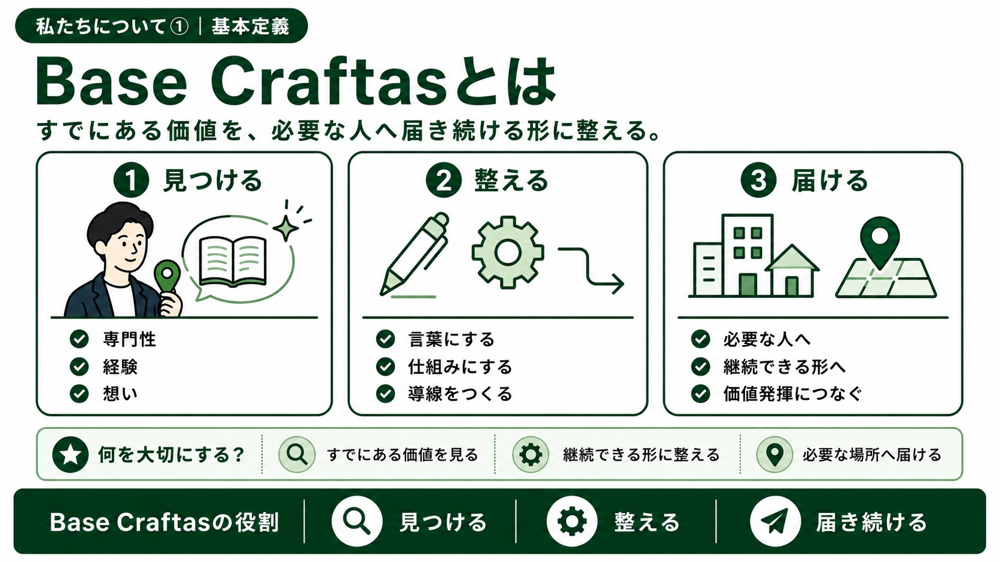
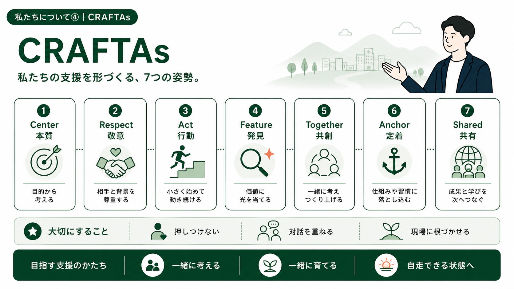
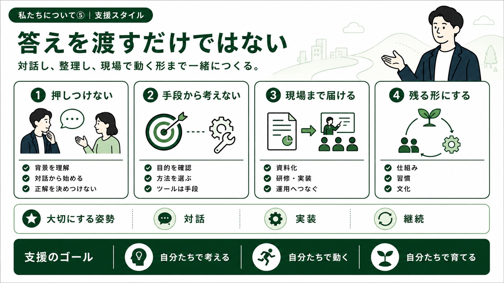
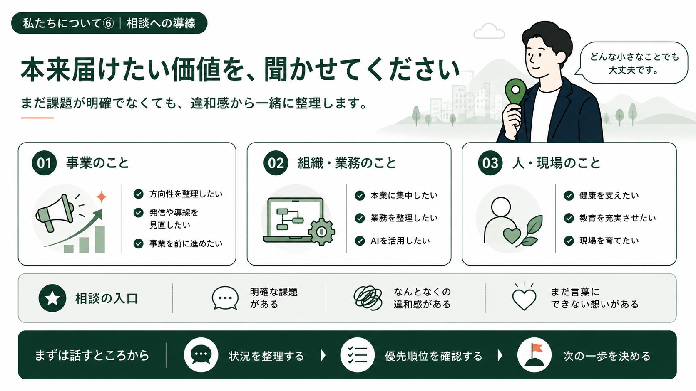

思想を伝えるだけで、終わらせない。
人と組織が本来持っている価値を見つけ、必要な人へ届き続ける土台を、一緒に整えます。
技術やクラフトが、必要な人へきちんと届くための土台を整える事業体です。
専門職の知識、現場で磨かれた技術、事業に込めた想い。その価値が伝わり、続いていくためには、言葉・導線・仕組み・働く人の健康といった土台が必要です。
Base Craftasは、インナーブランディング、AI導入・業務改善、健康資本支援を通じて、人と組織が無理なく価値を届け続けられる状態を一緒に整えます。

採用ブランド、AI導入・業務改善、健康資本。3つの領域から、人と組織が本来の価値に集中しやすい状態を支えます。
理念・文化・現場の専門性を整理し、施設や専門職が持つ価値を、必要な人へ誤解なく届く言葉と発信へ整えます。
会議、文書、情報整理、教育、広報などの業務を整理し、AI活用・業務改善・内製化を通じて、人が本来向き合う仕事へ集中しやすい状態をつくります。
身体、睡眠、疲労、ストレスなどの小さな不調に気づき、従業員が本来の力を発揮し続けられる職場を支えます。

答えを押しつけず、相手が大切にしていることを聞きながら考える。SNS、AI、業務改善、健康経営、研修といった手段からではなく、本来届けたい価値と現場で続く形から一緒に整えます。

事業の方向性、業務改善、従業員の健康資本、現場の教育や成長。
まだ課題が明確でなくても、組織の中で感じている違和感から一緒に整理します。
